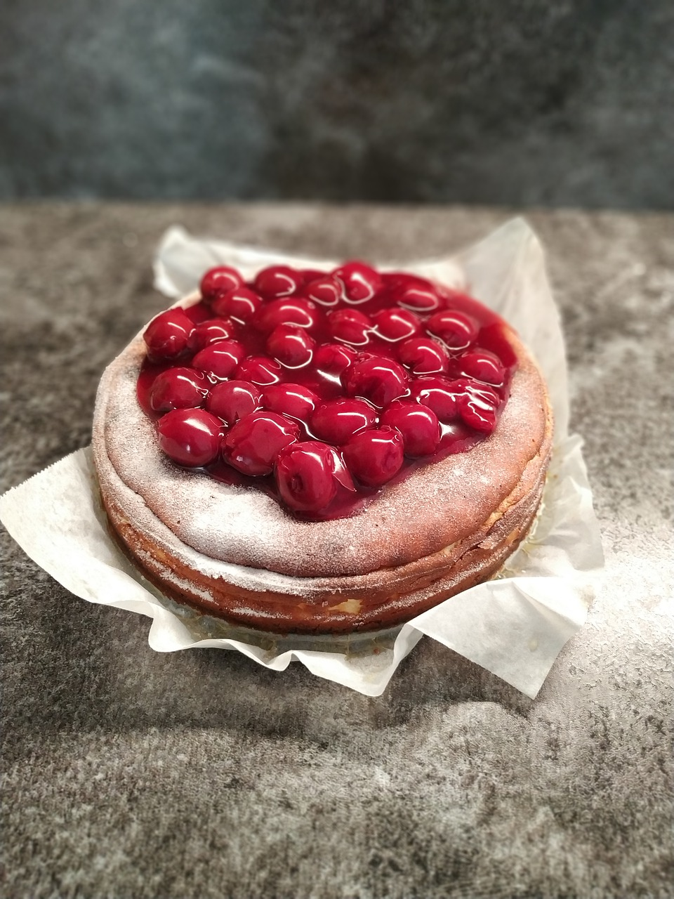

Rabia'nın Vişneli Cheesecake Tarifi
Tam Kıvamlı Çatlamayan Yapışmayan Harika Cheesecake. Rabia'nın Mutfağına hepiniz hoş geldiniz. Şimdi tarifimize geçelim.
Tarif: Rabia Öztoprak
Kaç kişilik: 8
Hazırlama Süresi: 30 dakika
Pişirme Süresi: 3 saat

Malzemeler
- Cheesecake Tabanı İçin:
- 500 gr Burçak Bisküvi
- 100 gr Tereyağı
- Cheesecake Hamuru İçin:
- 600 gr Labne Peyniri
- 200 ml Sıvı Krema
- 200 gr Şeker
- 3 tane Yumurta
- 80 gr Nişasta
- 1 paket Vanilya
- Yarım Limon Suyu
- Vişne Sosu İçin:
- 300 gr Dondurulmuş Vişne
- 100 gr Şeker
- 200 ml su
- 40 gr Nişasta
Yapılışı
- İlk olarak 25 cm’lik kek kalıbımızın tabanına pişirme kağıdı yerleştirelim, kelepçesini kapatarak kenarlarından fazla gelen kısımlarını makas yardımı ile keselim.
- Pişirme kağıdından uzun şeritler keselim ve bu şeritleri tereyağı ile kalıbın kenarlarına sabitleyelim.
- Daha sonra kalıbımızın tabanını alüminyum folyo ile kaplayalım.
- Cheesecakekimizin tabanı için bisküvileri rondodan geçirelim. Tereyağını da eriterek rondodan geçirdiğimiz bisküvilerin üzerine ilave edelim ve güzelce karıştıralım.
- Kalıbımızın tabanına hazırladığımız harcı bastırarak yerleştirelim ve buzdolabına koyarak 10-15 dakika kadar bekletelim. Bu aşamada harcı bardak yardımı ile bastırabilirsiniz.
- Bu sırada cheesecakekimizin hamuru için labne peyniri ve kremayı mikserde güzel bir şekilde çırpalım.
- İçerisine şekeri de ilave ederek çırpmaya devam edelim.
- Yumurtaları ekleyip güzel bir şekilde çırptıktan sonra üzerine nişastayı, vanilyayı ve limon suyunu da ekleyerek güzelce karışıncaya kadar çırpalım.
- Kek kalıbımızı dolaptan alalım ve fırın tepsisine yerleştirelim. Üzerine hazırladığımız hamuru aktaralım.
- Fırın tepsisine ılık su dökelim ve cheesecakekimizi önceden ısıttığımız 180°C fırında 10 dakika kadar pişirelim.
- Daha sonra sıcaklığı 160°C ye indirelim ve 50 dakika daha pişirmeye devam edelim.
- Piştikten sonra fırınımızı kapatalım ve 1 saat kadar fırının kapağını açmadan cheesecakekimizin soğumasını bekleyelim.
- Bu sırada vişneli sosumuzu hazırlamaya başlayalım. Dondurulmuş vişneyi uygun bir tencereye alalım, üzerine şekeri ve 1 su bardağı suyu ilave edelim.
- Nişastayı yarım çay bardağı suda çözdürelim ve tenceremize ilave edelim.
- Sosumuzu kaynayıp kıvam alana kadar karıştırarak pişirelim.
- Hazırladığımız vişneli sosumuzu soğuyan cheesecakekimizin üzerine gezdirelim.
- Eğer vaktiniz varsa cheesecakekinizi 1 gece buzdolabında dinlendirerek, vaktiniz yoksa 2-3 saat dinlendirerek kalıptan çıkartabilir ve servis edebilirsiniz.